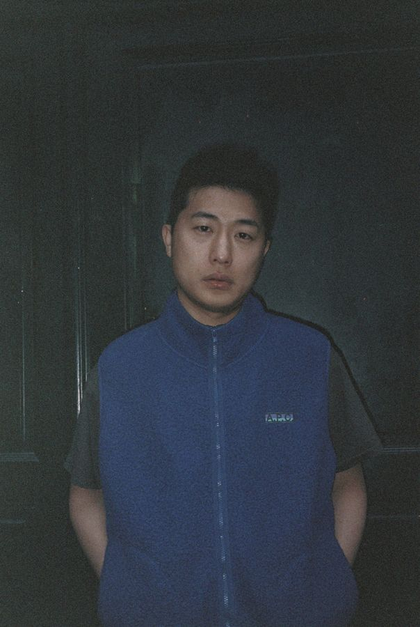
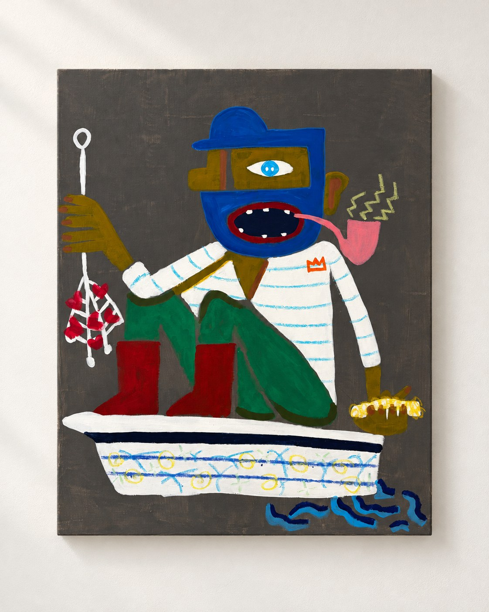
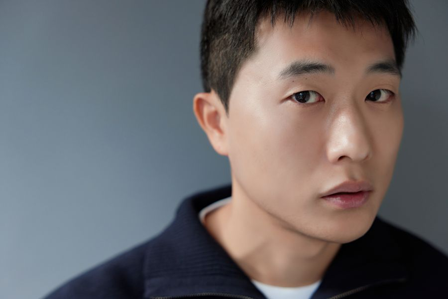

애드벌룬
서울특별시 자원봉사 유공표창 수상시간실적 위주의 자원봉사 프레임에서 벗어나, 능동적으로 사회공헌 프로그램을 운영할 수 있는 기회를 만들었습니다.
기업·기관 CSR과 자원봉사자를 연결하는 비영리 '애드벌룬 (Add Volunteer)' 설립.



저는 남다르게 보고,
직접 만들어서,
결과로 보여주는 사람입니다.
비영리를 만들었고,
IT 회사를 창업해
플랫폼 운영부터 매각까지 경험했어요.
돌아보면 사업도 저를 표현하는
하나의 예술이었던 것 같아요.
요즘은 연기와 그림을 비롯해,
저를 표현하는 다양한 방법을 찾아가고 있어요.
누군가에게 도움이 되거나
마음에 남는 것을 만들고,
신뢰와 수익을 쌓으며 오래 창작하고 싶어요.
재밌는 생각에 같이 들뜨고,
성과로 만들 수 있는
플레이어를 찾아요.
I’m looking for people who get excited about good ideas and can turn them into results.
프로젝트
빌더
웰니스 커뮤니티부터 패션 브랜드, 가구 브랜드, 디지털 디톡스 모임까지.
다양한 AI native 서비스를 만들어 운영 중이에요.
zero to one을 지나 수익이 나고 있고,
1→10을 함께 만들어갈 동료를 찾습니다.
커리어나 포지션은 중요하지 않아요.
AI를 압도적으로 잘 쓰거나, 미적 감각이 탁월하거나.
둘 중 하나면 충분해요.
고정 급여부터 수익 배분까지,
서로에게 맞는 조건으로 함께해요.
아티스트
정신건강 사업을 하면서 사람의 내면에 대한 관심이 깊어졌어요. 세종문화회관에서 한여름밤의 꿈의 티타니아를 연기한 적이 있는데, 그날 무대에서 느낀 강렬함이 아직도 남아 있어요.
그 뒤로 연기를 배우고 독립영화도 몇 편 찍었어요.
하고 싶은 이야기가 생기면 그에 어울리는 방식을 찾고 싶어요. 어떤 이야기는 그림이 되고, 어떤 이야기는 글이 될 수 있겠죠. 한 작품 안에 여러 가지를 섞어볼 수도 있고요.
저는 창작과 비즈니스가 만나는 지점이 예술이라고 생각해요. 누군가 기꺼이 돈을 내고 보고 싶은 작품을 만들고,
그 돈으로 다음 작업을 시작해보고 싶어요. 틀에 박히지 않고 함께 과감한 시도를 해볼 파트너를 찾고 있어요.
영리·비영리의 창업 경험을 가진 Serial Entrepreneur.
시간실적 위주의 자원봉사 프레임에서 벗어나, 능동적으로 사회공헌 프로그램을 운영할 수 있는 기회를 만들었습니다.
정신건강 플랫폼을 창업해 국내 최초 비대면 심리상담 서비스를 제공했습니다. VC 투자 유치와 조직 운영을 거쳐 서비스를 매각했어요.
재밌는 생각에 같이 들뜨고,
성과로 만들 수 있는
플레이어를 찾아요.
지금 운영하는 서비스를 함께 키워갈 동료를 찾아요. 같이 해보고 싶은 프로젝트와 거기에 보태고 싶은 강점을 들려주세요.
영화의 한 장면이나 작은 전시부터 같이 만들어봐요. 함께 해보고 싶은 작업이 있다면, 아이디어 한 줄부터 들려주세요.
어떤 일부터 함께할지 아직 모르겠다면, 짧은 소개부터 들려주세요.
하는 일도 관심사도 서로 다른 사람들이 가끔 만나 수다를 나누는 오프라인 모임이에요.
요즘 꽂힌 이야기 하나면 충분해요. 편하게 와서 같이 이야기해요.